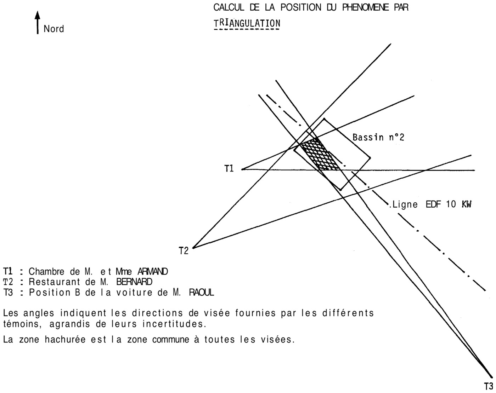

Perception et témoignages : exemple (Note technique n° 10, GEPAN)
4.1. Introduction
Nous allons montrer ici les grandes lignes de l'analyse des témoignages effectuée dans une enquête du GEPAN, récemment publiée (Cf.
EBERS et al, ).
L'abondance des données brutes exclut leur présentation in extenso. Nous rappelons simplement
qu'il s'agit d'un phénomène qui avait fortement éclairé une agglomération et ses alentours, peu après minuit, au
Il s'agit de l'observation faite à Saint-André-de-Corcy
(Ain) dans la nuit du , enquête GEPAN n° 79/03 .. Cette lumière a été observée
par 6 témoins au moins, répartis en trois groupes. Elle était accompagnée par des
coupures de courant électrique et par l'observation de formes lumineuses dans des endroits précis. Trois jours
après l'observation, environ 1800 kg de poissons sont morts dans des bassins d'élevage, à proximité immédiate de
l'endroit où le phénomène lumineux avait été observé.
Pour la plupart des témoins, nous possédons deux documents de travail : le PV
de gendarmerie et l'enquête du GEPAN. Ces documents comportent des
récits et des données spatio-temporelles, recueillies parfois par reconstitution (voir EBERS et al, ).
Le corpus des témoignages à analyser est constitué de 13 discours émanant de huit témoins et répartis dans les deux
documents (dans EBERS et al, , le compte-rendu d'enquête 79/03 du GEPAN ne cite que 6
témoins et 11 discours, les autres n'apportant rien au plan de l'analyse globale).
4.2. Examen des données
- Nous avons décomposé ces discours en unités élémentaires, en éléments descriptifs susceptibles de concerner des
phénomènes distincts bien que concomitants : « lumières », « coupures de courant » et « formes lumineuses ». Ces
données ainsi réparties forment la première série d'informations (témoignage) à traiter.
- La deuxième série est constituée par les informations relatives à la « propension à la subjectivité » (tel que
le terme a été défini plus haut). Pour 4 témoins, celles-ci ne laissent apparaître
aucune donnée spécifique susceptible de pondérer les unités élémentaires de discours.
On décèle par contre chez l'un des témoins, Madame ARMAND, une forte attente vis-à-vis des incendies et du feu,
en raison d'une expérience antérieure : J'ai vu une maison brûler et deux femmes se jeter par la fenêtre ;
ce sont des choses qui me restent…
Cette attente s'est traduite par une forte angoisse au moment de la perception des formes lumineuses : ces
fils électriques qui brûlaient, çà me remuait… boules de feu…
A un premier niveau de l'analyse, on peut considérer qu'il est probable que la subjectivité du témoin soit
intervenue dans la perception de ces éléments.
Un autre témoin, Monsieur RAOUL, a vécu son observation avec beaucoup d'angoisse et d'incompréhension. Par la
suite, il a manifesté un intérêt non négligeable pour des phénomènes « analogues », au point d'acheter des
revues spécialisées. Ces sentiments persistent au moment de l'enquête : Je m'explique mal, j'arrive à croire
qu'il y a des engins : on a été suivis par cette lumière, et puis voir ce truc en arrière, énorme…
. En
outre, le témoin a perçu le phénomène avec une sélectivité très forte, au point de ne remarquer aucun élément
du paysage (arbres, poteaux, moutons…) : Je les ai pas vu… çà m'a pas marqué l'esprit…
Ces données nous poussent à considérer que son témoignage doit être pondéré par une certaine propension à la
subjectivité. Cette subjectivité peut être moins forte pour les données recueillies cinq jours après
l'observation par la gendarmerie, que pour celles rapportées aux enquêteurs du GEPAN. En effet, en dehors des
actions du temps sur le souvenir des situations vécues avec une forte émotion, des enquêteurs privés ont
interrogé entre temps le témoin avec des méthodes « fermées », par exemple en montrant des photos dites « d'OVNI » pour que
Monsieur RAOUL retrouve le phénomène observé…
L'analyse conduit donc à considérer qu'il est probable que les données rapportées par Monsieur RAOUL ne sont
pas exemptes de subjectivité, en particulier pour ce qui est des termes employés (vocabulaire
interprétatif).
- Pour ce qui est des données relatives à l'environnement physique (données extrinsèques), elles se composent
principalement des positions spatio-temporelles des différentes observations : direction d'observation,
obstacles physiques divers… A titre d'exemple, nous pouvons signaler que le champ de vision était plus large pour
certains témoins, et que deux d'entre eux ont observé à l'intérieur d'une voiture en mouvement (voir EBERS et al, ).
4.3. Stratégie d'analyse
Tout en rappelant qu'il y a plusieurs façons d'analyser ces trois séries de données, nous choisissons dans le cas
présent d'étudier les témoignages (première série d'information) des points de vue successifs de :
- la concordance intratémoignage ;
- la concordance intertémoignage par groupes de coprésence (ou présence simultanée au moment de
l'observation) ;
- la concordance intertémoignage générale (d'un groupe de témoin à un autre).
Bien entendu, nous ferons appel, en cours d'analyse, aux données relatives aux propensions à la subjectivité et à
l'environnement physique.
4.4. Concordance intratémoignage
En général (voir tableau page suivante) les éléments rapportés lors des deux discours de chaque témoin (PV de
gendarmerie et enquête GEPAN) sont très cohérentes pour chaque témoin. Nous décelons cependant quelques
contradictions :
- la durée indiquée par Madame ARMAND passe d'une minute (PV de gendarmerie) à trois (enquête GEPAN). Le modèle
d'analyse permet de mettre cette différence en rapport avec l'effet de surestimation dû à l'angoisse ou à une
forte attentionCf. FRAISSE,
, pour l'évaluation des durées Fraisse, P.: Perception et estimation du
temps, in Fraisse, P., Piaget, J., Traité de psychologie expérimentale, tome IV, PUF, Paris, .. Nous considérons donc l'estimation d'une minute comme étant
probablement la moins subjective.
- Une interprétation différente peut rendre compte d'un changement constaté dans la terminologie employée par
Monsieur RAOUL. Ce témoin parle de
boule
, de masse
dans le PV de gendarmerie, et d'appareil
,
de disque
, lors de l'enquête GEPAN, voire d'engin
lorsqu'on lui demande son opinion sur la
question.
Nous pouvons avancer l'hypothèse que le témoin, dans un désir de compréhension d'un phénomène qui l'avait
fortement troublé, adhère à une explication du style « engin volant » en particulier s'il a été aiguillé dans ce
sens par les méthodes des enquêteurs privés citées plus haut.
[Éléments rapportés par chaque témoin au PV de gendarmerie et à l'enquête GEPAN ; les cases barrées dans
l'original sont laissées vides]
| Nom des témoins |
Enquête |
Heure |
Durée |
Bruit |
Lumière |
Source Lumineuse |
| Couleur |
Intensité |
Portée |
Localisation |
Couleur |
Forme |
Dimensions |
| M. ARMAND |
Gendar. | 0h50 | 1mn30 | Sourd Fort Crépit. | Violette et bleue | Forte |
Tous les environs | | | | |
| GEPAN | | +d'1mn | crépitem. | idem Pantome 518 | Forte |
plusieurs km autour | | | | |
| Mme ARMAND |
Gendar. | 1h | 1mn | sourd fort soudure | Violette | très éblouissante |
1 km à Est | Fil sur l'étang | | câble & boules en feu | 15 m |
| GEPAN | | 3mn | Idem | Idem Pantome 264, 528 | | 7 km autour |
au-dessus 2ème bassin | Plus « feu » que violette | idem | 15 à 20 m |
| Melle ARMAND |
Gendar. | 0h30 ou 1h | 1mn | sourd fort saccadé | Violette | aveuglante |
| | | | |
| GEPAN | 0h ou 1h | quelques secondes | idem | bleu de soudure |
très forte éblouissant | | | | | |
| M. RAOUL |
Gendar. | après 0h45 | 3 à 4 mn | néant | | comme le jour |
autour voiture | 8/10 m sol derrière voiture | vert bleu/mauve | Boule | 10 à 15 m |
| GEPAN | 1h | 4mn | néant | comme le jour | idem forte | idem |
idem | pantome 306 305 | Disque | 10 m |
| Mme RAOUL |
GEPAN | | | | vert Pantome 360 359 | forte |
autour devant voiture | | | | |
| M. BERNARD |
Gendar. | 0h45 | 1mn | néant | soudure | très forte | |
de l'étang | | | |
| GEPAN | 0h45 | | néant | soudure violette P 543,548 | | |
derrière le tabac vers étangs | | | |
4.5. Concordance intergroupes par groupes de coprésence
M., Mme et Mlle ARMAND
Ces trois témoins étaient situés, au moment de l'observation, dans deux pièces voisines. Ils ont regardé par
leurs fenêtres respectives. Les témoignages indiquent que, avant de regarder, Mlle ARMAND a entendu une
exclamation de son père qui se situe quelques secondes après qu'il ait commencé à observer (Mme ARMAND a regardé
un peu avant son mari). Les durées d'observation rapportées permettent alors d'affirmer que les 3 témoins étaient
face à un même phénomène.
Les témoignages sont très proches pour l'heure d'observation, la durée, le bruit, la couleur et l'intensité de
la lumière.
Cependant, deux différences importantes apparaissent entre leurs récits : le câble en feu
et les
boules en feu
, rapportés exclusivement par Mme ARMAND, et le degré d'éblouissement des témoins. Alors que
M. et Mme ARMAND voyaient tout le paysage éclairé par la lumière, Mlle ARMAND était fortement aveuglée, au point
de ne voir qu'un rideau de lumière
.
Cette dernière contradiction peut être expliquée grâce à trois propositions :
- une sensibilité particulière de Mlle ARMAND à la lumière. Cette proposition est en accord avec le fait que ce
témoin a eu, les jours après l'observation, des
petites irritations dans les yeux
;
- une plus grande intensité lumineuse reçue objectivement par Mlle ARMAND ; cette proposition présuppose que le
point d'observation de ce témoin était légèrement plus rapproché de la source lumineuse supposée isotrope ;
- une intensité lumineuse croissante du phénomène observé. L'accoutumance est plus aisée si le témoin commence
son observation alors que le phénomène est encore de faible intensité. Ainsi, Mme, M. et Mlle ARMAND, qui ont
commencé à observer cet ordre, font état d'éblouissement d'autant plus fort : M. ARMAND a été relativement plus
ébloui que son épouse :
J'ai été fort ébloui par une lumière qui éclairait tous les environs… tellement
intense que je n'ai rien pu voir d'autre
.
Les témoignages de Mlle ARMAND (aveuglée
) et de son père (cf. dernière citation) ne poussent pas à
considérer que les phénomènes câbles en flammes
et boules de feu
, rapportés par Mme ARMAND,
manquent de cohérence au niveau du groupe. Ils peuvent résulter simplement d'une plus grande accoutumance.
A ce stade de l'analyse, l'acceptation de ces deux éléments descriptifs ne doit pas ignorer la propension à la
subjectivité signalée plus haut. Toutefois, cette propension ne permet pas non plus de rejeter totalement ces
données. On peut supposer que Mme ARMAND a observé quelque chose s'apparentant aux éléments descriptifs qu'elle
fournit.
Quelle que soit la propension à la subjectivité que l'on ait pu déceler, il reste toujours une probabilité,
même faible, que cette description soit parfaitement exacte. Mais cette probabilité est directement fonction de
l'importance de cette propension à la subjectivité.
Une autre ambiguïté peut être facilement dépassée, à propos du phénomène « coupure de courant électrique ». Mlle
ARMAND a constaté au moment de l'observation qu'il n'y avait pas de courant, alors que son père a remarqué, après
la fin du phénomène lumineux, que le courant n'était pas coupé. La coupure du courant disparaît donc à peu près
au même moment que la lumière éblouissante.
M. & Mme RAOUL
Ces deux témoins étaient, au moment de l'observation, à l'intérieur de leur voiture en mouvement. Nous pouvons
considérer avec certitude que leur observation relève du même phénomène lumineux. Par contre, M. RAOUL a été le
seul à se retourner et à percevoir une « forme lumineuse », sans que cela puisse être confirmé ou infirmé par son
épouse qui conduisait et regardait toujours devant elle.
Leurs témoignages sont largement concordants pour les éléments descriptifs de la lumière.
Toutefois, le témoignage de Mme RAOUL n'a été consigné que par l'enquête GEPAN, quatre mois après l'observation
et précédé de plusieurs conversations, sur le phénomène observé, avec son époux. Celui-ci est, en outre,
considéré comme pouvant avoir une propension à la subjectivité non négligeable lors de son témoignage, en
particulier pour les éléments se rapportant à la forme et au comportement des phénomènes (vocabulaire
interprétatif).
Nous appliquons le même critère aux éléments communs des témoignages des deux époux, en particulier à la
description du déplacement de la lumière : Cette lumière avançait en même temps et à la même vitesse que
nous
(M. RAOUL) ; La lumière nous suivait, j'avais vraiment l'impression qu'elle était fixée sur la
voiture
(Mme RAOUL).
M., Mme BERNARD & Mme IRENE
(Seul le premier de ces témoins, M. BERNARD, est cité dans l'enquête GEPAN n° 79/03).
Ces trois témoins sont largement concordants pour l'heure, la couleur, l'intensité et la direction de la
lumière. M. BERNARD est le seul à n'avoir pas perçu de bruit, mais il se trouvait à l'intérieur de son
établissement pendant que les deux autres témoins étaient à l'extérieur.
Les trois témoins ont observé une coupure de courant électrique pendant toute la durée du phénomène.
4.6. Concordance intertémoignage générale
A ce stade de l'analyse, seuls les phénomènes « lumières », « bruit » et « coupures de courant électrique »
peuvent conduire à l'élaboration d'une hypothèse commune.
La situation des témoins, l'heure de l'observation et les aires illuminées, permettent d'adopter comme hypothèse la
plus économique celle d'un phénomène « lumineux » unique, accompagné d'un bruit et d'une coupure momentanée du
courant électrique.
La plupart des témoignages concordent, en indiquant des durées, intensités, couleurs, portées de la lumière et des
descriptions du bruit semblables ou compatibles. A titre d'exemple, le groupe RAOUL indique que la lumière venait
des étangs
situés devant les fenêtres du groupe ARMAND.
Ainsi, les données sont cohérentes avec une hypothèse de localisation des aspects lumineux et sonores à proximité
des étangs, accompagnés d'une coupure du courant électrique.
L'analyse permet aussi de préciser certains aspects descriptifs probables du phénomène, en particulier pour ce qui
est des données câble en flammes
(Mme ARMAND) et boule/appareil
(M. RAOUL).
Nous avons déjà signalé qu'il faut tenir compte de la propension à la subjectivité décelée chez les témoins à
propos de ces thèmes. Toutefois, la reconstitution (voir croquis page suivante) situe le phénomène
« boule/appareil » dans la direction et avec la taille apparente du câble rapporté « en flammes », c'est-à-dire
au-dessus des étangs, vers le centre supposé de la « lumière ».
Calcul de la position du phénomène par triangulation

Nous pouvons alors considérer le phénomène « câble en flammes » et « boule/appareil » comme un phénomène unique,
concomitant avec l'aspect général « lumière ».
L'appellation masse, boule lumineuse
(PV de gendarmerie) est à préférer à appareil
, non seulement en
raison de la proximité temporelle avec l'observation, mais aussi parce qu'elle se recoupe plus aisément avec le
câble en flammes
.
4.7. Conclusion
L'analyse fournit finalement des données assez précises sur les phénomènes concomitants « lumière », « bruit » et
« forme lumineuse ». Toutefois, la précision est moindre pour les caractéristiques formelles de ce dernier aspect,
car elles restent dépendantes de la signification qui a pu être attribuée par les témoins du phénomène.
A plus forte raison, nous sommes conduits à donner un poids assez faible aux boules de feu
qui ne sont
rapportées que par un seul témoin, et à la lumière qui avançait avec la voiture
rapportée par deux témoins
dépendants.
4.8. Épilogue
L'étude approfondie de l'environnement et des anomalies physiques ont permis, dans le cas présent, de développer
ultérieurement l'hypothèse d'un « effet couronne » particulièrement intense avec fusion partielle du câble (boules
de feu tombant dans l'étang). Cette hypothèse, parfaitement cohérente avec les données fournies par l'analyse des
témoignages, a été confirmée par les services spécialisés de l'EDF.
Il s'ensuit que les informations câble en flammes
et même boules de feu
(tombant dans l'étang)
fournies par M. ARMANDC'est Mme ARMAND qui rapporte le câble et les boules en feu (voir le
tableau et la section 4.5 ci-dessus). étaient parfaitement exactes (l'effet couronne a entraîné un
échauffement et une fusion du câble), alors que l'analyse des témoignages conduisait, sur ce point, à une assez
forte présomption de subjectivité.
Nous sommes, dès lors, confrontés aux limites et nuances de la pondération faite à partir de la propension à la
subjectivité. Dans le meilleur des cas, cette pondération indique une probabilité d'intervention de la subjectivité
du témoin : on peut supposer que Mme ARMAND a observé quelque chose s'apparentant aux éléments descriptifs
qu'elle fournit. Quelle que soit la propension à la subjectivité qu'on ait pu déceler, il reste toujours une
probabilité même faible que cette description soit parfaitement exacte
.
Ici, les éléments physiques indiquent, a posteriori, que le degré de similitude entre le
stimulus réel et la description fournie était fort. Même si l'analyse ne prévoyait cela qu'avec une faible
probabilité.
A l'opposé, le degré de similitude entre « l'appareil » et la « lumière qui avançait avec la voiture » et la
situation réelle est très faible, correspond ainsi aux hautes probabilités de subjectivité auxquelles concluait
l'analyse.
Cela semble une illustration claire des ambitions modestes des jeux de pondération résultant des analyses de
témoignages. Il ne faut jamais oublier que la présomption de subjectivité d'une information ne porte que sur les
discours des témoins. Par contre, ceci ne nous permet pas d'analyser directement, même sous forme probabiliste, le
stimulus lui même.
Cette méthode d'analyse n'a pas encore été systématiquement utilisée dans les enquêtes du GEPAN. Une simple ébauche
en a été faite pour l'enquête 79/06 (AGUADO et al, Aguado, Th., Jimenez, M., Penot, J.-P., Rospars, J.-P., Velasco, J.-J.: Premiers éléments
d'enquête, Notes techniques du GEPAN n° 8, pp. 1-20, ). A titre
d'exercice, il serait bien entendu instructif de reprendre les enquêtes antérieures (ESTERLE et al, , AUDRERIE et al,
Audrerie, D., Esterle, A., Jimenez, M.: Compte rendu de l'enquête 79/05,
Notes techniques du GEPAN n° 7, pp. 3-40, , par exemple), et d'y
développer ce style d'analyse. Ceci ne sera pas exposé en détail. Disons simplement que l'on voit apparaître une
très grande variété de confirmations, les différents types d'information (relation témoin/témoignage,
environnement physique, environnement psychosocial) pouvant y prendre un poids, une importance très divers. (Voir
le poids de l'environnement psychosocial dans AUDRERIE et al, Audrerie, D.,
Esterle, A., Jimenez, M.: Compte rendu de l'enquête 79/05, Notes techniques du GEPAN n° 7, pp. 3-40, et surtout ESTERLE et al, ).
Il faut seulement retenir que cette méthode d'analyse a l'avantage de systématiser l'approche, d'éviter d'omettre
des aspects qui peuvent se révéler importants et d'accueillir aisément tout ce que peuvent enseigner les
recherches développées sur les processus perceptifs.